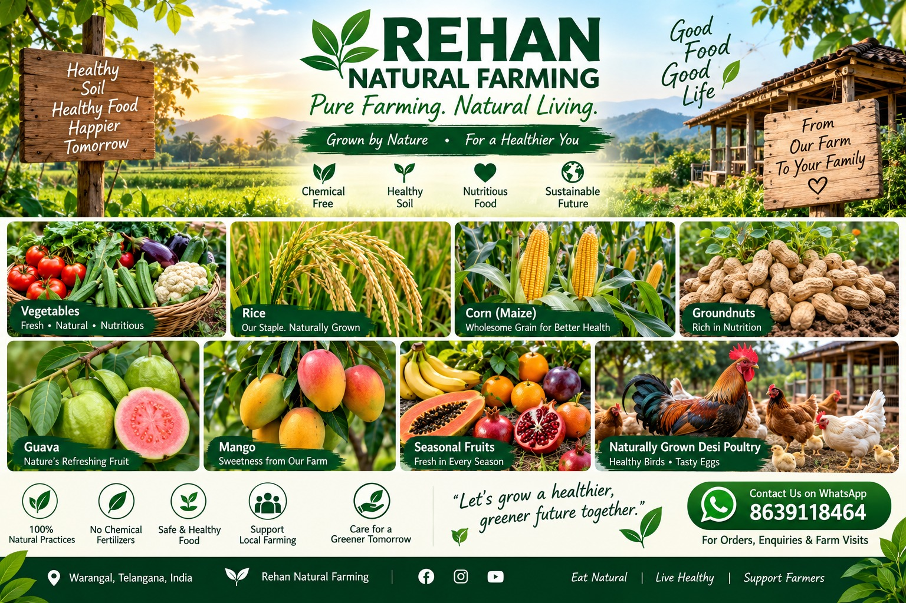
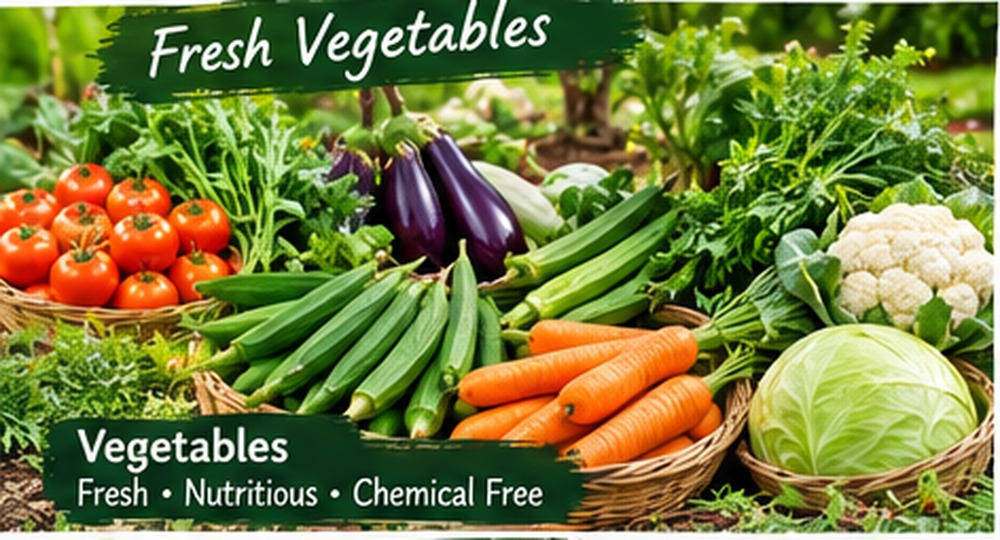
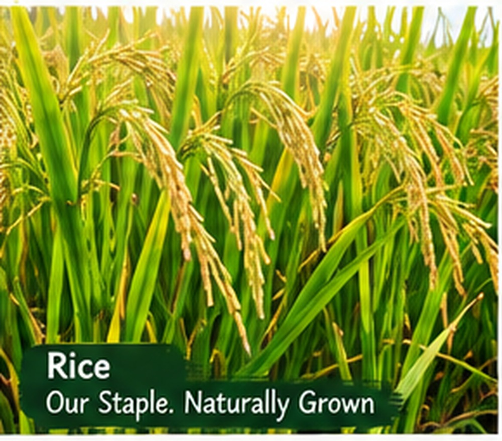
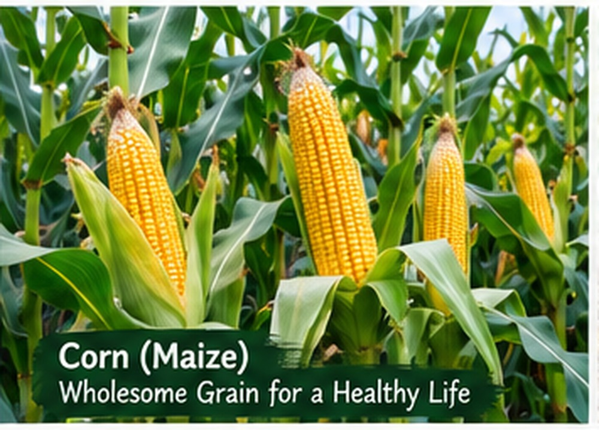
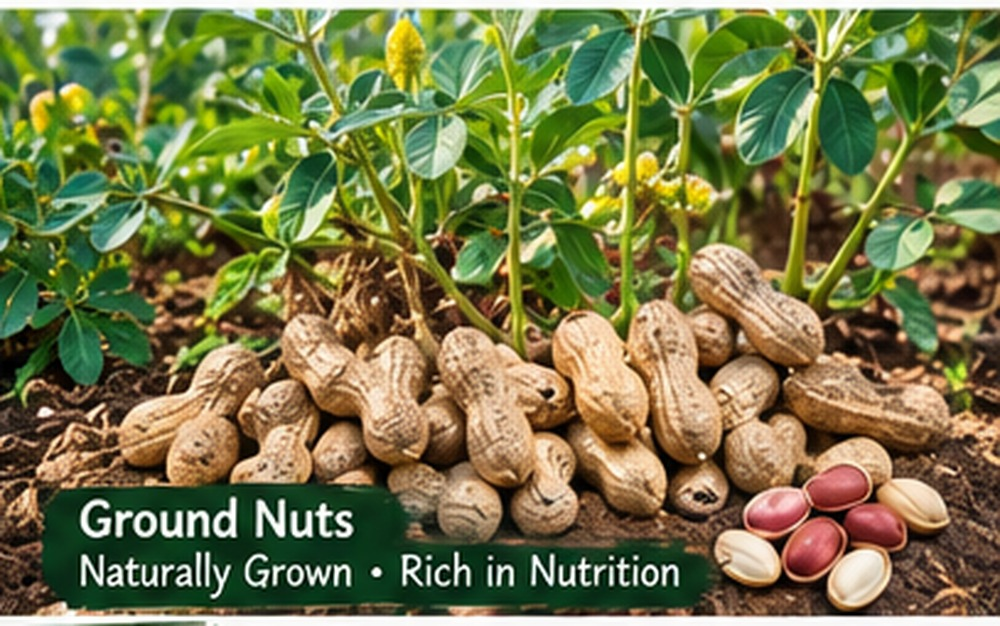
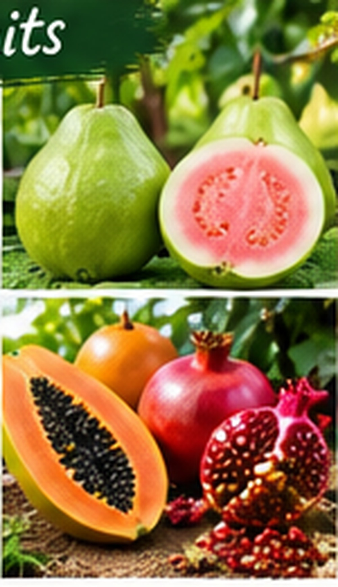
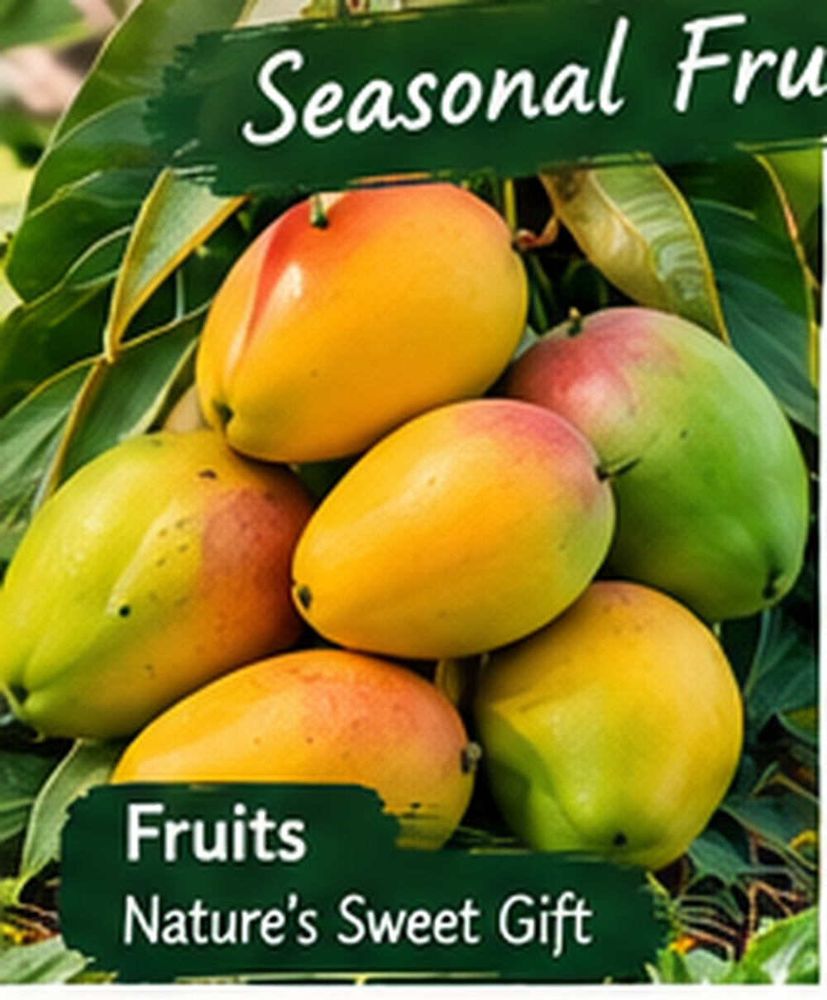
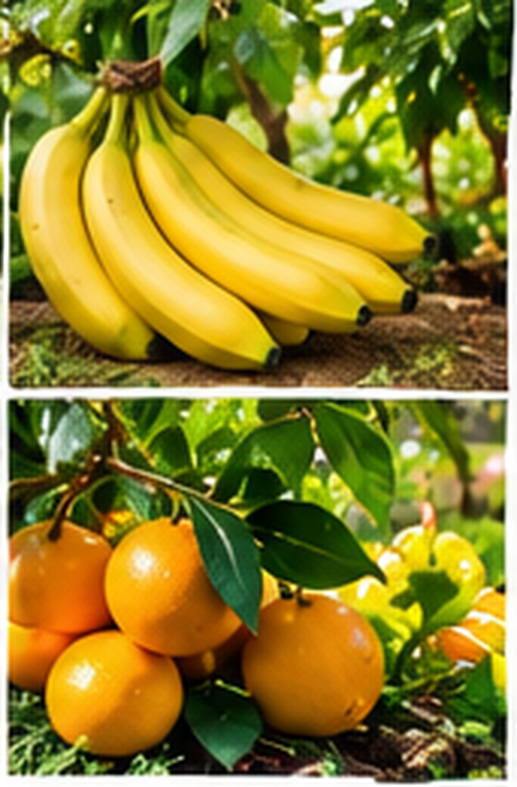
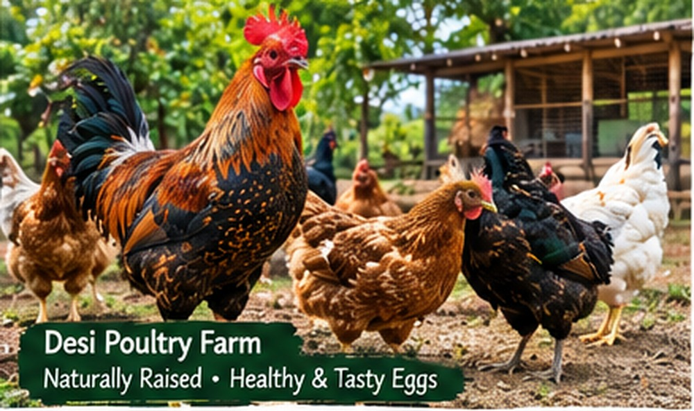
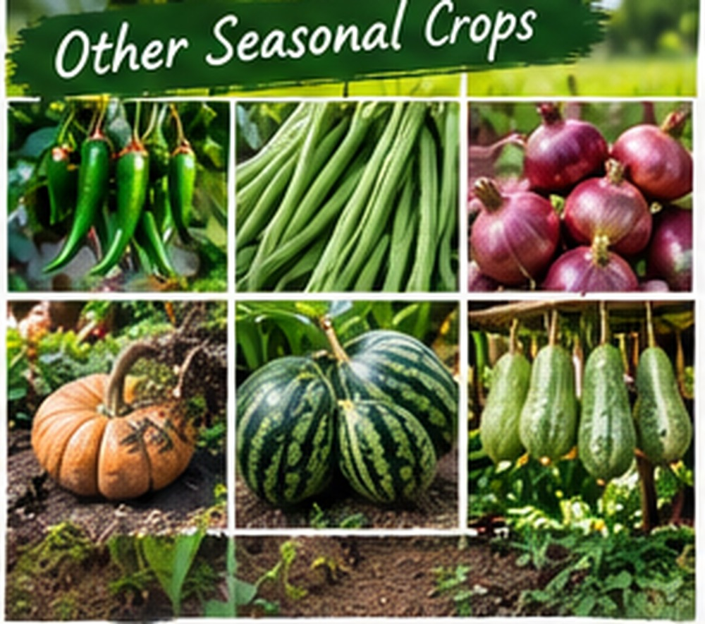

🌱
Healthy Soil
We focus on soil health and natural fertility to support strong crops.
Welcome to Rehan Natural Farming — naturally grown food, cared for from healthy soil to your family.

At Rehan Natural Farming, we believe healthy food begins with healthy soil. Our goal is to grow useful farm products using nature-friendly and sustainable practices.
Our farm produce includes fresh vegetables, rice, corn, groundnuts, guava, mango, seasonal fruits and naturally grown desi poultry.
Explore our products →Simple, sustainable practices that respect the soil, crops, animals and future generations.
We focus on soil health and natural fertility to support strong crops.
We aim to use water responsibly and protect this valuable resource.
We encourage beneficial insects, plants and a balanced farm ecosystem.
Where suitable, we use compost and nature-based inputs to support crops.
Availability is seasonal. Contact us for current stock, prices and order details.









“Let’s grow a healthier, greener future together.”
— Rehan Natural FarmingCall or WhatsApp us for current product availability, prices and farm visits.
📱 WhatsApp / Phone: 8639118464
📍 Location: Warangal, Telangana, India
Contact us before visiting so we can share current timings, directions and available products.
📞 Call 8639118464